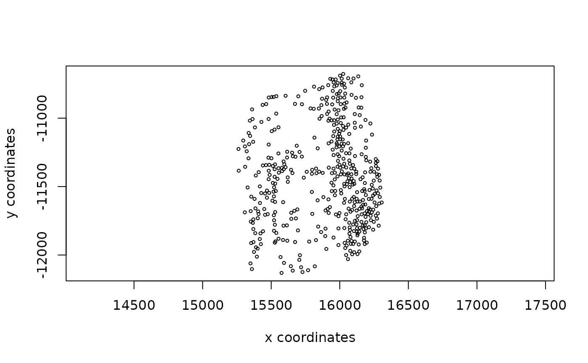

Decompose affine matrix into scale, rotation, and shear operations
Source:R/methods-affine.R
decomp_affine.RdAffine transforms are linear transformations that cover scaling,
rotation, shearing, and translations. They can be represented as matrices of
2x3 or 3x3 values. This function reads the matrix and extracts the values
needed to perform them as a list of class affine. Works only for 2D
transforms. Logic from https://math.stackexchange.com/a/3521141
Examples
# load example data
sl <- GiottoData::loadSubObjectMini("spatLocsObj")
# affine transform matrices
m <- diag(rep(1, 3))
shear_m <- trans_m <- m
trans_m[seq(2), 3] <- c(200, 300)
scale_m <- diag(c(2, 3, 1))
shear_m[2, 1] <- 2
aff_m <- matrix(c(
2, 0.5, 1000,
-0.3, 3, 20,
100, 29, 1
), nrow = 3, byrow = TRUE)
# create affine objects
# values are shown in order of operations
affine(m)
#> <affine2d>
#> anchor : -180, 180, -90, 90 (xmin, xmax, ymin, ymax)
#> rotate : 0 (rad)
#> shear : 0, 0 (x, y)
#> scale : 1, 1 (x, y)
#> translate : 0, 0 (x, y)
affine(trans_m)
#> <affine2d>
#> anchor : -180, 180, -90, 90 (xmin, xmax, ymin, ymax)
#> rotate : 0 (rad)
#> shear : 0, 0 (x, y)
#> scale : 1, 1 (x, y)
#> translate : 200, 300 (x, y)
affine(scale_m)
#> <affine2d>
#> anchor : -180, 180, -90, 90 (xmin, xmax, ymin, ymax)
#> rotate : 0 (rad)
#> shear : 0, 0 (x, y)
#> scale : 2, 3 (x, y)
#> translate : 0, 0 (x, y)
s <- affine(shear_m)
a <- affine(aff_m)
force(a)
#> <affine2d>
#> anchor : -180, 180, -90, 90 (xmin, xmax, ymin, ymax)
#> rotate : -0.165148677414627 (rad)
#> shear : 0.016260162601626, 0 (x, y)
#> scale : 2.02210754385589, 3.04138126514911 (x, y)
#> translate : 1000, 20 (x, y)
# perform piecewise transforms with decomp
sl_shear_piecewise <- sl |>
spin(GiottoUtils::degrees(s$rotate), x0 = 0, y0 = 0) |>
shear(fx = s$shear[["x"]], fy = s$shear[["y"]], x0 = 0, y0 = 0) |>
rescale(fx = s$scale[["x"]], fy = s$scale[["y"]], x0 = 0, y0 = 0) |>
spatShift(dx = s$translate[["x"]], dy = s$translate[["y"]])
sl_aff_piecewise <- sl |>
spin(GiottoUtils::degrees(a$rotate), x0 = 0, y0 = 0) |>
shear(fx = a$shear[["x"]], fy = a$shear[["y"]], x0 = 0, y0 = 0) |>
rescale(fx = a$scale[["x"]], fy = a$scale[["y"]], x0 = 0, y0 = 0) |>
spatShift(dx = a$translate[["x"]], dy = a$translate[["y"]])
plot(affine(sl, shear_m))
plot(sl_shear_piecewise)
plot(affine(sl, aff_m))
plot(sl_aff_piecewise)
